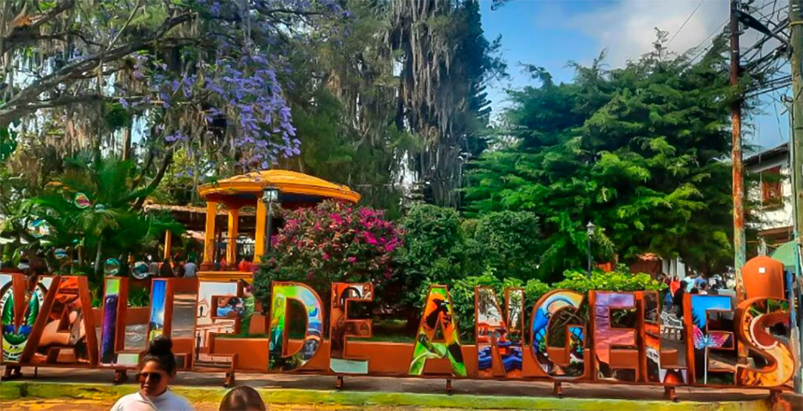

Bonito parque, justo en el centro de la ciudad, linda iglesia católica, rodeado de muchas opciones de restaurantes y tiendas de souvenir para comprar un bonito recuerdo.
El Parque Turístico de Valle de Ángeles, situado a 22 km de Tegucigalpa, es un destino caracterizado por su clima fresco, ambiente colonial y gran tradición artesanal, conocido como "La Cuna de los Artesanos". Ofrece una mezcla de naturaleza, cultura y gastronomía típica, con atracciones como el Parque Central, la iglesia, murales artísticos y el cercano Parque Nacional La Tigra.
se encuentra en Valle de Ángeles, Francisco Morazán, Honduras